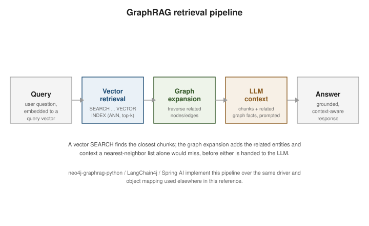

Vector Search and GenAI
|
This content was generated with the assistance of AI and should be verified against the official documentation before being relied on in production. |
Neo4j stores an embedding as a native vector property and indexes it for approximate nearest-neighbor (ANN) search like any other document or vector store, but the property graph underneath is what turns plain vector similarity into GraphRAG — retrieval that also walks relationships for context a bag of nearest embeddings cannot capture on its own.
A worked example: three chunks and a small knowledge graph
The examples below use a three-dimensional embedding so that every number can be checked by hand; real embeddings have
hundreds or thousands of dimensions (1536 for many hosted models), and the queries are identical. Two documents are
split into three chunks. Two chunks mention entities, and the entities are related to each other:
CREATE VECTOR INDEX chunk_embedding IF NOT EXISTS
FOR (c:Chunk) ON (c.embedding)
OPTIONS {indexConfig: {`vector.dimensions`: 3, `vector.similarity_function`: 'cosine'}};
CREATE (d:Doc {name: 'Neo4j Cypher guide'})-[:HAS_CHUNK]->(c1:Chunk {text: 'MATCH finds patterns', embedding: [0.9, 0.1, 0.0]}),
(d)-[:HAS_CHUNK]->(c2:Chunk {text: 'Indexes speed up lookups', embedding: [0.1, 0.9, 0.1]}),
(d2:Doc {name: 'Operations manual'})-[:HAS_CHUNK]->(c3:Chunk {text: 'Backups protect data', embedding: [0.0, 0.2, 0.9]})
CREATE (e1:Entity {name: 'MATCH'}), (e2:Entity {name: 'Pattern'}), (e3:Entity {name: 'Index'}), (e4:Entity {name: 'Cypher'})
CREATE (c1)-[:MENTIONS]->(e1), (e1)-[:RELATED_TO]->(e2), (e1)-[:RELATED_TO]->(e4),
(c2)-[:MENTIONS]->(e3), (e3)-[:RELATED_TO]->(e4);The index is created ONLINE immediately for a small data set (SHOW INDEXES reports its type as VECTOR); on a large
data set wait for it with CALL db.awaitIndexes() before querying.
The VECTOR type and vector indexes
An embedding is stored as a VECTOR-typed property, built with the vector() function from a list of
numbers, a dimension count and a coordinate type:
MATCH (m:Movie {title: "The Matrix"})
SET m.embedding = vector($embedding, 1536, FLOAT);The VECTOR type is a typed, fixed-dimension value; an index can also be built over an ordinary LIST<FLOAT>
property, as the worked example does. One practical caveat: storing a property of type VECTOR needs a store
format that supports it (the block format). On the Community Docker image used to test this page, which creates databases in the aligned
format, CREATE (:Probe {v: vector([1.0, 2.0, 3.0], 3, FLOAT)}) fails with storing properties of type vector is not
supported in aligned store format, whereas vector([1.0, 0.0], 2, FLOAT) as a query value is accepted and the
vector.similarity.cosine function accepts plain lists. If a store cannot hold VECTOR values, keep embeddings as
float lists; the index and SEARCH behave the same.
A VECTOR property only becomes ANN-searchable once a vector index exists over it — see
Indexes and constraints for the full CREATE VECTOR INDEX
syntax, the vector.dimensions / vector.similarity_function options, and how a vector index compares to
Neo4j’s other index types. This page assumes that index already exists and focuses on querying it, and on
what a graph adds once retrieval has to go beyond a flat top-k list. Full details on the type itself are in
the Cypher manual’s Vector type
reference.
Querying with the Cypher SEARCH clause
The modern way to run an ANN query in Cypher is the SEARCH clause: it binds a variable from a MATCH
pattern to the nearest neighbors of a query vector inside a named vector index, optionally yielding a
similarity score:
MATCH (m:Movie)
SEARCH m IN (
VECTOR INDEX movie_plot_embedding
FOR vector($queryEmbedding, 1536, FLOAT)
LIMIT 5
) SCORE AS similarity
RETURN m.title AS title, similarity
ORDER BY similarity DESC;Against the worked example, searching for the chunks nearest to the query vector [1.0, 0.0, 0.0] (a question
that is "all about" the first dimension) returns:
MATCH (c:Chunk)
SEARCH c IN (VECTOR INDEX chunk_embedding FOR [1.0, 0.0, 0.0] LIMIT 2)
SCORE AS similarity
RETURN c.text AS text, round(similarity * 1000) / 1000.0 AS similarity
ORDER BY similarity DESC;text, similarity
"MATCH finds patterns", 0.997
"Indexes speed up lookups", 0.555The score is the cosine similarity mapped by the index (for cosine, a higher value means closer). The first chunk
points almost exactly along the first axis, the second only partly, and Backups protect data is excluded by
LIMIT 2. Cosine itself can be computed without an index: vector.similarity.cosine([1.0, 0.0, 0.0], [0.9, 0.1, 0.0])
returns 0.99694....
Because SEARCH is a clause, what follows it is ordinary Cypher: a predicate on the score such as
SCORE AS similarity WHERE similarity > 0.9 keeps only the strong matches (here just the first chunk). Filtering
inside the SEARCH with WHERE is more restricted: its predicate must be a conjunction of property predicates
(equality or a range) on properties that the index covers. Something like c.text STARTS WITH 'I' is rejected with
invalid predicate for vector search with filters, so filter on text after the search, and design the index with the
filter properties when pre-filtering matters.
Older code may still call the db.index.vector.queryNodes(indexName, k, queryVector) procedure for the same
lookup — it still runs, but SEARCH is the current, superseding way to express a vector query as a normal
part of a Cypher pattern rather than a separate procedure call. See
the Cypher manual’s SEARCH clause reference for
the full grammar, including combining SEARCH with WHERE pre-filters and other clauses in the same query.
GraphRAG: vector retrieval plus graph expansion
GraphRAG is the pattern of following a vector-similarity retrieval step with a graph traversal step before handing context to an LLM: the vector search finds the chunks or entities most similar to the query embedding, and the graph expansion pulls in the neighbors, related entities, or provenance those hits connect to — context a nearest-neighbor list alone has no way to express. The combined result, not just the raw matches, becomes the context passed to the LLM prompt.
// 1. vector retrieval: the chunks most similar to the query embedding
MATCH (chunk:Chunk)
SEARCH chunk IN (
VECTOR INDEX chunk_embedding
FOR vector($queryEmbedding, 1536, FLOAT)
LIMIT 5
) SCORE AS similarity
// 2. graph expansion: entities each chunk mentions, and their close neighbors
MATCH (chunk)-[:MENTIONS]->(entity)-[:RELATED_TO*1..2]-(context)
RETURN chunk.text AS chunk, similarity, collect(DISTINCT context.name) AS relatedContext
ORDER BY similarity DESC;Running exactly that pipeline against the worked example, for the same query vector, returns each retrieved chunk with the entities reachable within two relationships of what it mentions:
chunk, similarity, relatedContext
"MATCH finds patterns", 0.997, ["Cypher", "Pattern", "Index"]
"Indexes speed up lookups", 0.555, ["Cypher", "MATCH"]The first chunk mentions the entity MATCH, which is related to Pattern and Cypher; one more hop from Cypher
reaches Index, so the LLM is handed not only the matching sentence but the neighboring concepts, including one the
sentence never named. That is context a flat top-k vector list cannot supply. Bound the traversal (*1..2, a label
filter, a LIMIT) so the context stays small enough for the prompt, and prefer relationship types with meaning to
unbounded patterns.

The official neo4j-graphrag-python package packages
this pattern — embedding, vector retrieval, optional graph expansion, and prompt assembly — as a Python
library purpose-built for Neo4j. On the JVM side, the
LangChain4j integration wires Neo4j in as a vector store
and graph-augmented retriever for LangChain4j pipelines, and the
Spring AI integration does the same for Spring AI’s
VectorStore abstraction — both sit above the same driver and object mapping described in
Spring Data Neo4j rather than replacing it. The broader
catalog of drivers, frameworks and tools in this space is indexed at
the Neo4j GenAI Ecosystem, and
the Vector Search developer guide walks through
the retrieval half of the pattern end to end.
Building the graph from documents with a language model (schema-guided extraction, entity resolution and incremental updates) and querying it with vector-Cypher, hybrid and text-to-Cypher retrievers in Python, Spring AI and LangChain4j are covered in RAG Systems in Production: GraphRAG & Knowledge Graph Construction and Text2Cypher & Graph Retrievers.
A dedicated treatment of building LLM-powered applications on Neo4j exists — see the bibliography.
For vector/RAG retrieval that doesn’t need graph expansion, Redis:
Vector search is the Redis alternative. See ANN Indexes: Flat, IVF, HNSW and Beyond for the vendor-neutral
ANN theory behind the VECTOR INDEX above, and Agentic RAG for its GraphRAG
subsection covering this same graph-augmented retrieval pattern more generally. See
Retrieval & RAG Bridge for wiring such retrievers into LangChain chains and agents.